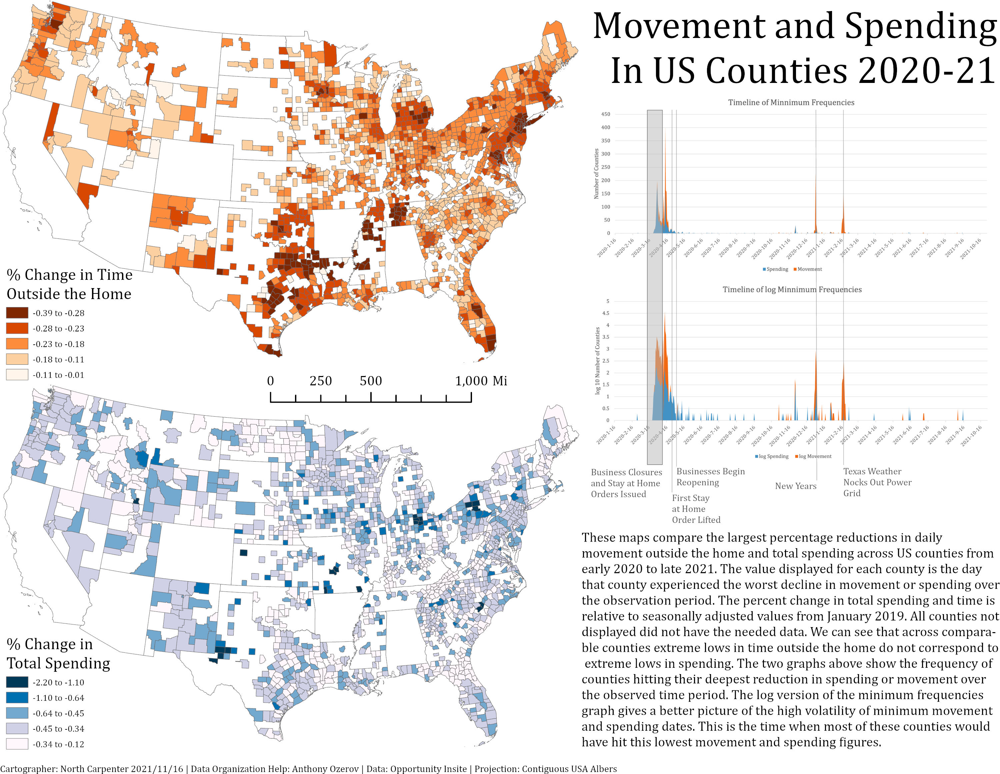

I wrote this paper with my co-author for an industrial economics class. It focuses on medicaid providing hospital performance outcomes post hospital system mergers. It uses and is constrained by publicly accessible Medicare data.
I did the data wrangling and ran the analysis for this causal discovery project on over 1.1 million fatal crashes. Our goal was to discover partial ancestral graphs that identified cuasal diffrences between pedestrian and non pedestrian crashes.
